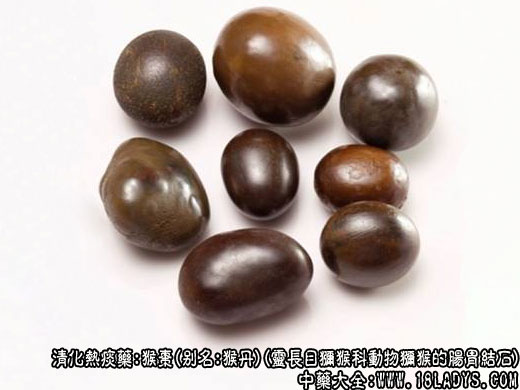

猴枣为少常用中药，历代本草未见收载。《本草纲目》载有“鮓答”，系指牛马诸畜肠胃肝胆间所生的结石，但未提及猴枣。
别名：申枣，猴丹，羊肠枣。
来源：为灵长目猕猴科动物，猕猴或其它撰的肠胃结石或颊囊（嗉袋）结石。均为进口。
产地：主产于南洋群岛、印度、马来西亚等地。据说西藏有产，但极少见。
性状鉴别：为不规则的卵圆形或短棒状，大如枣，小如豆。表面青铜色或灰绿色，平滑而有光泽，质硬而脆，摇之常有声响，击之易碎。断面不平坦，灰绿色，无光泽，显同心环层，中央有小果核，柴梗或其它物核心。气微，味淡微苦涩，嚼之有砂砾感。 以个大，表面平滑有光泽，青铜色，断裂后层纹明显者为佳。
主要成分：有效成分尚待研究。
药理作用：清热消炎、祛痰镇惊。作用可能是镇静、镇痛。
性味：苦、咸、寒、平。
归经：心、肺、肝、胆经。
功能：清热镇惊、豁痰定喘，解毒消肿。
主治：痰热惊痫，小儿惊风，痈疽瘰疬等症。
临床应用：主要用于止痉，尤多用于小儿惊风与热痰有关（例如急性志气管炎、肺炎之高热抽搐）。可单用猴枣，或配其他药制成丸散，常用者为猴枣散，此散也可用于成人之中风痰壅。
用量：散剂0.3～0.6g，不入煎剂。
处方举例：猴枣散（成药）：含猴枣、麝香、菖蒲、牛黄、冰片等，成人每次0.9～1.5g，小儿一般0.3～0.6g，多用开水冲服。
注：
（1）猴枣中的核心不作药用。
（2）猴枣为进口商品，是中药材中最珍贵的药物之一，古籍本草未见收载，至清陈仁山《药物生产辩》已有记述，名猴枣，并说明来源于南洋群岛，该地土人呼为羊肠枣。按此命名一者为猴枣，一者为羊肠枣，究系猴生还是羊生尚待考证。
（3）《本草纲目》卷五九鮓答项下，李时珍曰：“鮓答生走兽及牛马诸畜肝胆之间，有肉囊裹之，多至升许，大者如鸡子，小者如栗如榛，其状白色，似石非石，似骨非骨，打破层迭。”（一九六五年间广西乐县有杀牛者曾杀出鮓答，其生部位及数量、形、色均与李时珍所述完全相同。）
（4）《本草纲目拾遗》卷九养衰项下记述：“羊哀形圆如弹，大小不等，产于羊腹在胃中，惟山羊有之……。”《常山丞宦游笔记》载“军营于羊腹中得石子名鮓答。形如鸭卵色紫黄……质细如玉，滋润如水……而羊哀又与鮓答异，鮓答坚重细润；羊哀则轻松。”（羊哀，广东广西药店有售，名牛羊草结，为牛羊食草时误食毛发或丝，团结成球状，体轻松）按此记载羊腹中即产生哀亦可生成鮓答，但生产部位不同。
（5）猴枣生长的部位各医药书籍也说法不一，多数说生于猴胆或肝胆间以及肠胃中如牛之生黄。《中国医学大辞典》则说猿猴含于口中之物所结精者。按动物黄，均生于囊中，为病变生成。狗宝、马宝等结石，均生于胃肠中。马宝则有铁石为核心。猴枣亦有核心，多为果核。果核可留于颊囊胃肠而不能进入胆囊，故产于胆囊之说应排除。
（6）本品来源未定，成分不详，应进行研究。